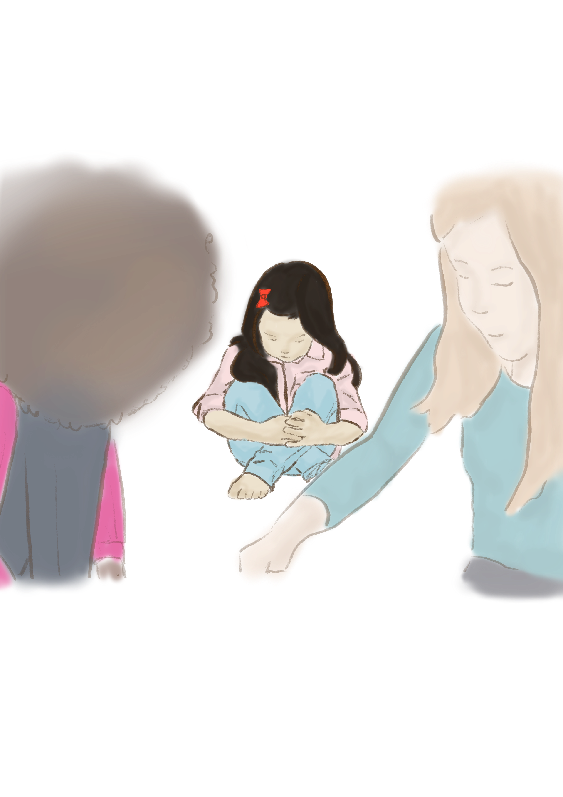
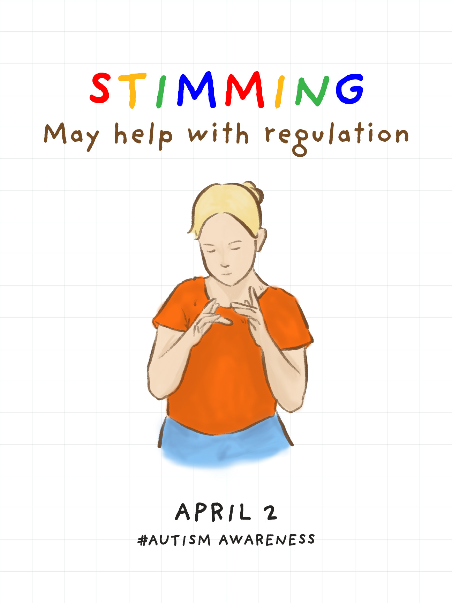
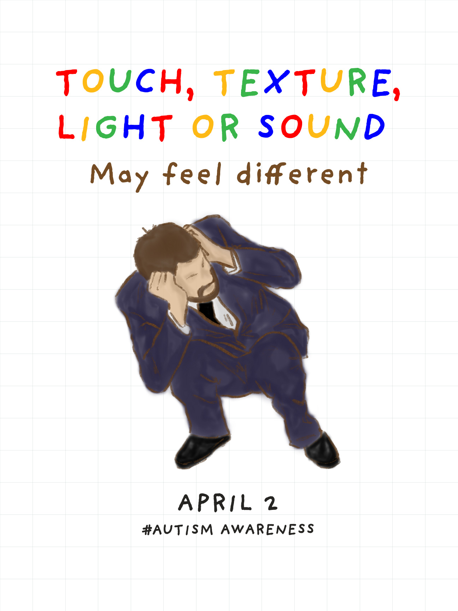
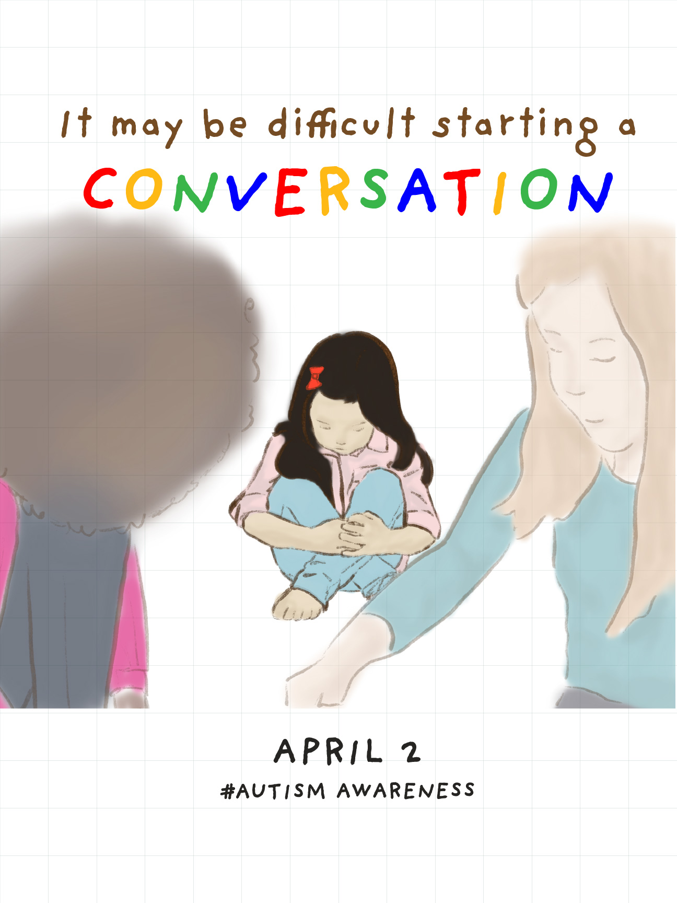
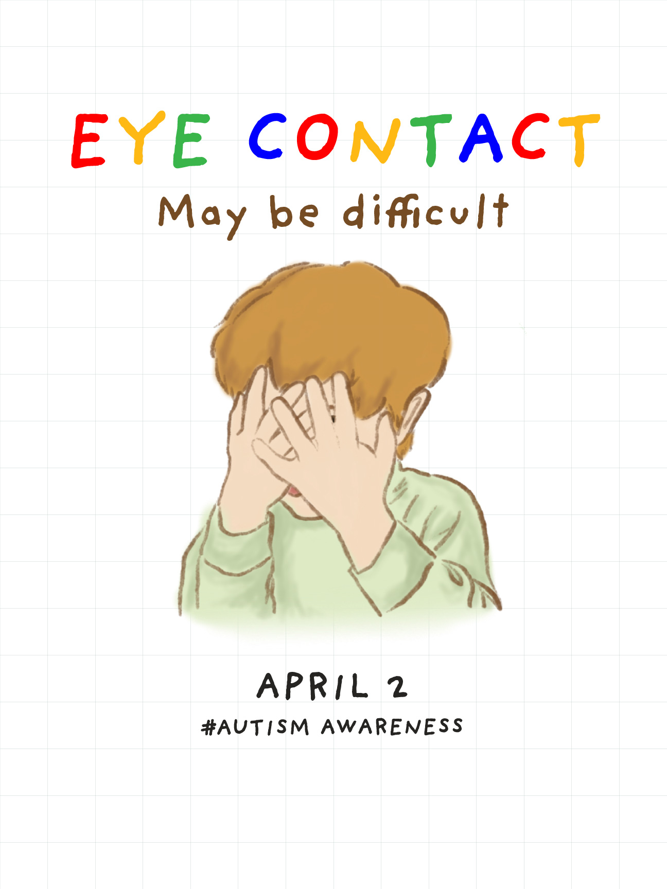

Selected work / 052026
Illustration
Autism Awareness Posters
A set of illustrated posters designed to communicate ideas around autism awareness with warmth and clarity.

About the project
Overview
A set of illustrated posters designed to communicate ideas around autism awareness with warmth and clarity.
Focus
Illustration · Poster design
Project imagery
Illustration series


